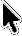

Free · Open Source · macOS 14 or later
Turn your Mac’s screen into a living photo album
Let your Photos library resurface on your Mac. Move with ← →, pause with Space, and revisit the last 100 photos shown anytime.
Since 2018, people have been asking for this
macOS Mojave (10.14.2) removed arrow-key control from the photo screen saver.

Visit on a bigger screen to interact

Unsigned preview
How to open it
DejaVuScreensaver is not signed or notarized yet. macOS may block the first launch. To open it, follow the steps below.
Apple’s official security guide ↗-
1
Move it to Applications
Open the DMG, drag DejaVuScreensaver into Applications, then try to open it once.
-
2
Open Privacy & Security
In System Settings, select Privacy & Security and scroll to Security.
-
3
Choose Open Anyway
In the Security section, click Open Anyway. The button appears after the blocked launch.
-
4
Confirm Open
Choose Open in the warning, then authenticate if macOS asks. You only do this once.
Let your Mac’s screen bring back memories
Free and open source, for macOS 14 or later.